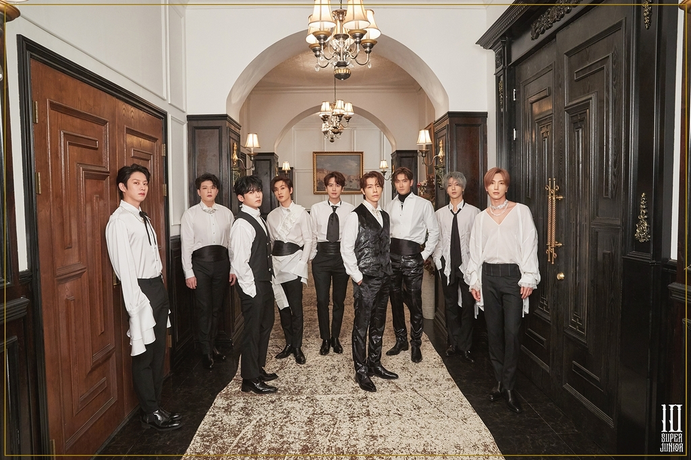

Super Junior to meet global fans on Asia tour
Legendary boy band Super Junior will hold an Asia tour.
The group, celebrating 19 year since its debut, will hold an Asia concert tour titled "2024 Super Junior Super Show Spin-off: Halftime." The tour begins with a concert in Seoul in June, according to the band's agency SM Entertainment.
After the Seoul concert, the group will visit Bangkok and Singapore in July, Kuala Lumpur, Malaysia and Taipei, Taiwan in August, Hong Kong and Jakarta, Indonesia in September. Detailed information including venues and specific dates of the performances are to be announced later via Super Junior's official fan club community and social media account.
At its 18th anniversary fan meeting, "1t's 8lue," in November last year, the Super Junior members expressed affection for one another, saying, "We have most fun and happiness when we're all together as Super Junior. We have a lot of plans for the 19th and 20th anniversaries as well." That fan meeting sold out as soon as sales began, and its performance was broadcast online through Beyond Live and Weverse to fans all over the world.